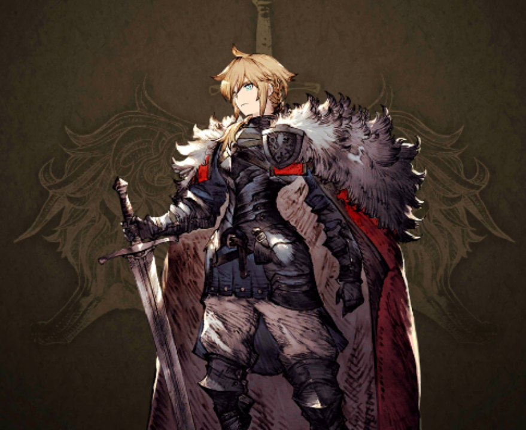
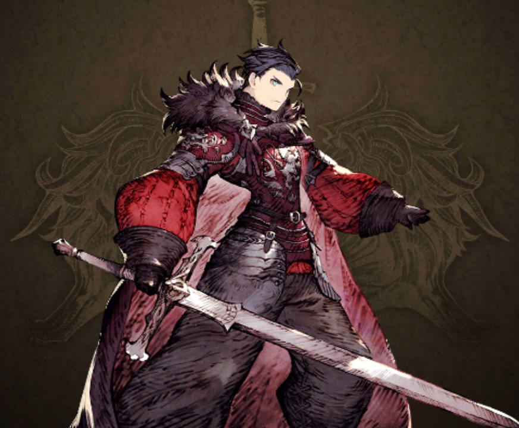
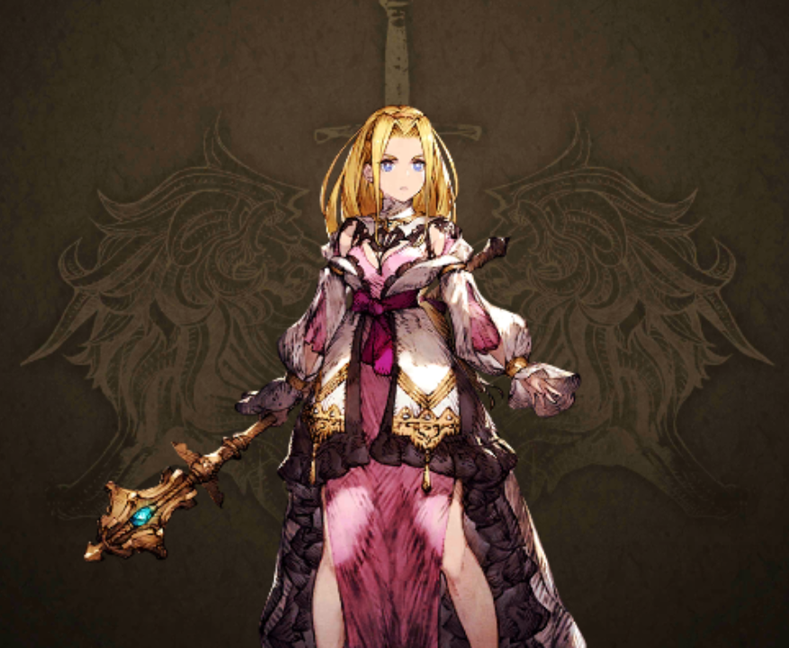
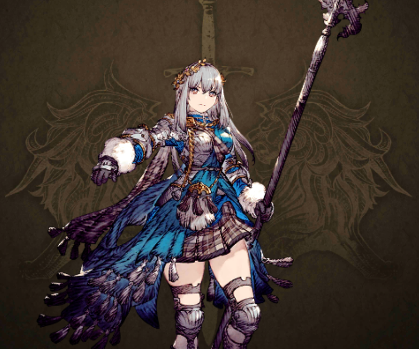
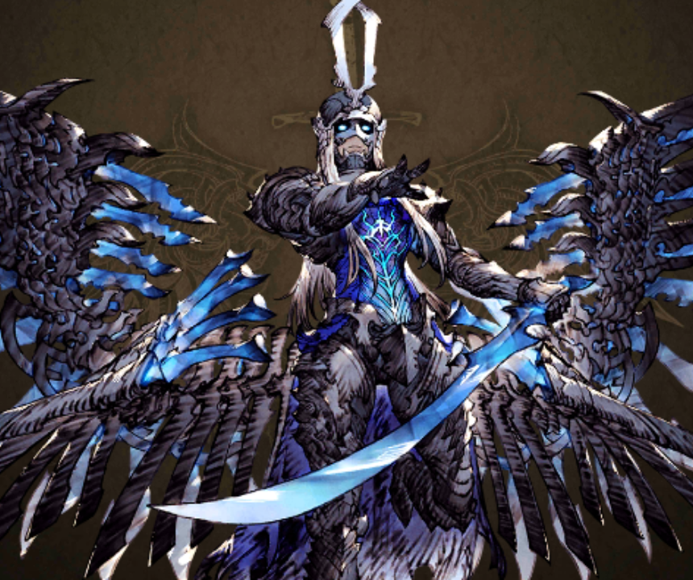
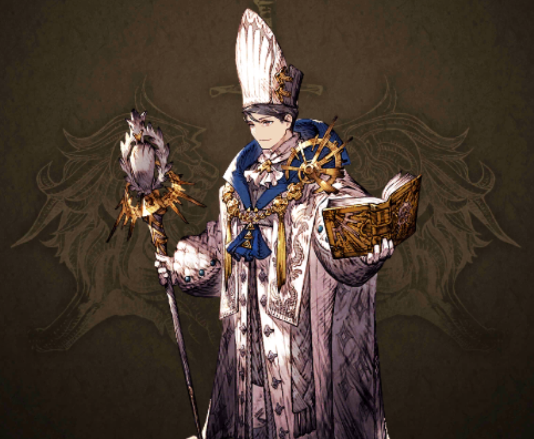

幻影戦争とは
スクウェア・エニックスより配信されているスマートフォン用ゲームアプリです。正式には『ファイナルファンタジー ブレイブエクスヴィアス 幻影戦争』といいます。アードラ大陸を舞台に勃発する戦争の群像劇を描いており、ストーリーは2024年現在、第三部の物語が配信されています。本編のストーリーとは違った世界線で描かれるアナザーストーリーもあります。
主な登場人物
モント・リオニス
リオニスの王子で幻影戦争の主人公。
シュテル・リオニス
リオニスの王子でモントの双子の弟。
マシュリー・ホルン
ホルンの王女で、鉄の美姫と呼ばれる女性。
グラセラ・ウェズエット
ウェズエットの王位継承権を持つ女性で、モントの許嫁。
ギルガメッシュ
翼持つ者として人々から畏れられている。何らかの目的があって動いているようだが…。
サーダリー・クルステア
アードラ大陸におけるクリスタル教の宗祖。ギルガメッシュとは敵対関係にある。